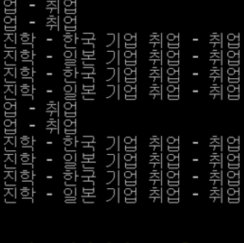
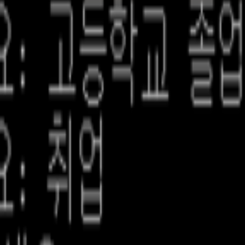
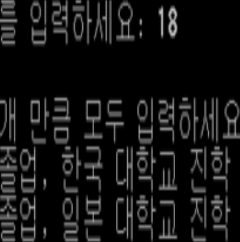

구현 기능
|  |
모든 경우 출력 기능 도착지에 도달할 수 있는 모든 경우를 출력하고, 모든 경우의 수, 길이가 가장 긴 경우, 길이가 가장 짧은 경우까지 출력합니다. |
|  |
출발지 및 도착지 지정 기능 모든 경우를 출력하기 위한 출발지와 도착지를 지정합니다. |
|  |
루트 선언 기능 출발지에서 도착지로 도달하기 위한 모든 루트를 선언합니다. |
배경과 목적
실제 알고리즘을 사용하는 프로그램이 적지 않은 것 같습니다. 따라서 비슷한 기능을 구현해서 프로그래밍 스킬을 향상하기 위해 구현하게 되었습니다.
실제 알고리즘을 사용하는 프로그램이 적지 않은 것 같습니다. 따라서 비슷한 기능을 구현해서 프로그래밍 스킬을 향상하기 위해 구현하게 되었습니다.
배운 점
- C++로 탐색 알고리즘을 구현하는 법을 알게 되었습니다.
- C++로 시뮬레이터를 구현하는 법을 알게 되었습니다.
진행 절차
- DFS를 재귀 함수로 구현하였습니다.
- 필요한 정보를 입력받으면 모든 경우의 수를 출력하도록 하였습니다.
- 이렇게 해서 원하는 프로그램을 구현할 수 있었습니다.
역량 강화를 위해 가장 노력한 점
C++로 탐색 알고리즘 구현
C++로 탐색 알고리즘 구현
전체 구조

사용 기술
C++
C++
개발 환경
Dev C++
Dev C++